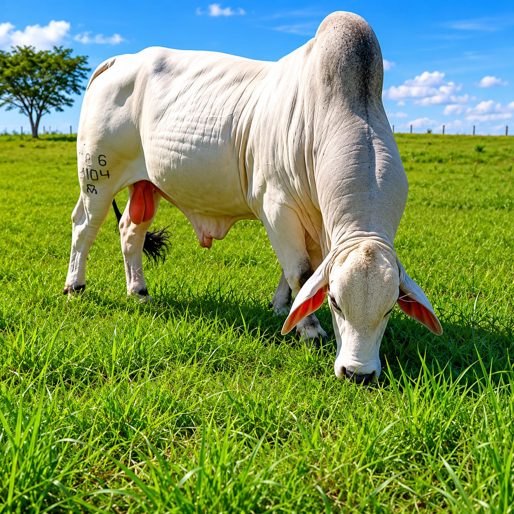

Tabapuã01 / Tabapuã
O zebu genuinamente brasileiro
Formado no estado de São Paulo a partir da década de 1940 e reconhecido oficialmente em 1981, o Tabapuã carrega uma história singular. É uma raça naturalmente mocha, conhecida pela docilidade e pela adaptação às condições tropicais.
- Naturalmente mocho
- Temperamento dócil
- Adaptação tropical
- Habilidade materna